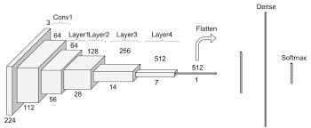
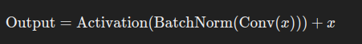

ResNet, short for Residual Network, is a type of artificial neural network architecture introduced by Kaiming He and his colleagues in their 2015 paper “Deep Residual Learning for Image Recognition.” ResNet has been highly influential in the field of deep learning, particularly for its ability to train very deep networks effectively. Here’s a detailed overview:
Key Concepts
-
Residual Learning:
- The core idea of ResNet is to use residual learning to make training deep networks easier. Instead of trying to learn the underlying mapping directly, ResNet learns the residuals, i.e., the difference between the desired mapping and the input.
- Mathematically, if the desired mapping is ( H(x) ), ResNet lets the layers learn a residual function ( F(x) = H(x) - x ), which can be rephrased to ( H(x) = F(x) + x ).
-
Skip Connections (or Shortcut Connections):
- ResNet introduces skip connections that bypass one or more layers. These connections add the input of a layer to the output of a deeper layer.
- This helps mitigate the vanishing gradient problem by allowing gradients to flow directly through the network without passing through non-linear activations, making the optimization process more efficient.
Architecture

A typical ResNet architecture consists of multiple residual blocks. A residual block can be represented as follows: 
-
Convolutional Layers:
- Each residual block usually consists of a few convolutional layers. For example, in ResNet-50, there are 3 layers per block, while in ResNet-34, there are 2 layers per block.
-
Batch Normalization:
- Batch normalization is applied after each convolutional layer to normalize the activations, which helps in faster convergence and more stable training.
-
Activation Function:
- Typically, ReLU (Rectified Linear Unit) is used as the activation function.
-
Addition Operation:
- The input (via the skip connection) is added to the output of the convolutional layers before passing through the next block.
Variants
ResNet has several variants, mainly differing in depth:
- ResNet-18: 18 layers
- ResNet-34: 34 layers
- ResNet-50: 50 layers
- ResNet-101: 101 layers
- ResNet-152: 152 layers
The deeper variants (e.g., ResNet-50, ResNet-101) use bottleneck architectures, where each block has three layers: a 1x1 convolution to reduce dimensions, a 3x3 convolution, and a 1x1 convolution to restore dimensions.
Advantages
-
Deeper Networks:
- ResNet allows the training of very deep networks (hundreds or even thousands of layers) by mitigating issues like vanishing gradients.
-
Improved Performance:
- It has significantly improved the performance of deep learning models on various tasks, particularly in image recognition, achieving state-of-the-art results on benchmarks like ImageNet.
-
Generalization:
- Residual connections improve the generalization capabilities of the model, making it more robust.
Applications
ResNet architectures are widely used in various computer vision tasks, including:
- Image classification
- Object detection
- Semantic segmentation
- Image generation
In summary, ResNet’s introduction of residual learning and skip connections has made it a foundational architecture in deep learning, enabling the successful training of very deep networks and achieving superior performance across many tasks.